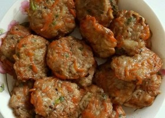
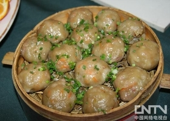
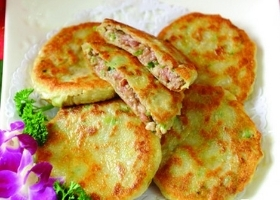
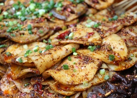

推荐
家常菜
烘焙
最新推荐
热门菜谱
最受欢迎
热门菜谱
所有菜谱
一周热门
人气菜谱
明星菜谱
汤羹
热菜
凉菜
主食
小吃
西餐
家常菜
零食
泡酱腌菜
烘焙
烤箱菜
火锅
主食小吃
米饭
面条
包子
饺子
饼
馒头花卷
北京小吃
....
中式菜系
鲁菜
川菜
闽菜
粤菜
苏菜
浙菜
湘菜
....
外国美食
日本料理
韩国料理
法国菜
意大利菜
泰国菜
印度菜
越南菜
....
场景与饮食方式
早餐
下午茶
中式宴请
西式宴请
快手菜
高颜值
小清新
....
健康食补
减肥瘦身
贫血
痛经
清热祛火
滋阴
壮阳
便秘
....
难度与耗时
简单
瘦身
普通
高级
神迹
半小时
一小时
....
黄焖鸡米饭技术

学做小吃

蒸菜
热门菜谱
新手入门
快手菜
家常菜
热菜
凉菜
汤羹
主食
小吃
烘焙
泡酱腌菜
自制食材
查看全部菜谱分类
大家都在做
面条
饺子
早餐
凉拌菜培训
十元店进货渠道
学烤鱼
丰胸汤

特色小吃培训

小吃培训
菜谱
食材
专题
菜单
话题
健康
珍选
搜索
美食天下首页


 面条
面条
 饺子
饺子
 早餐
早餐
 凉拌菜培训
凉拌菜培训
 十元店进货渠道
十元店进货渠道
 学烤鱼
学烤鱼